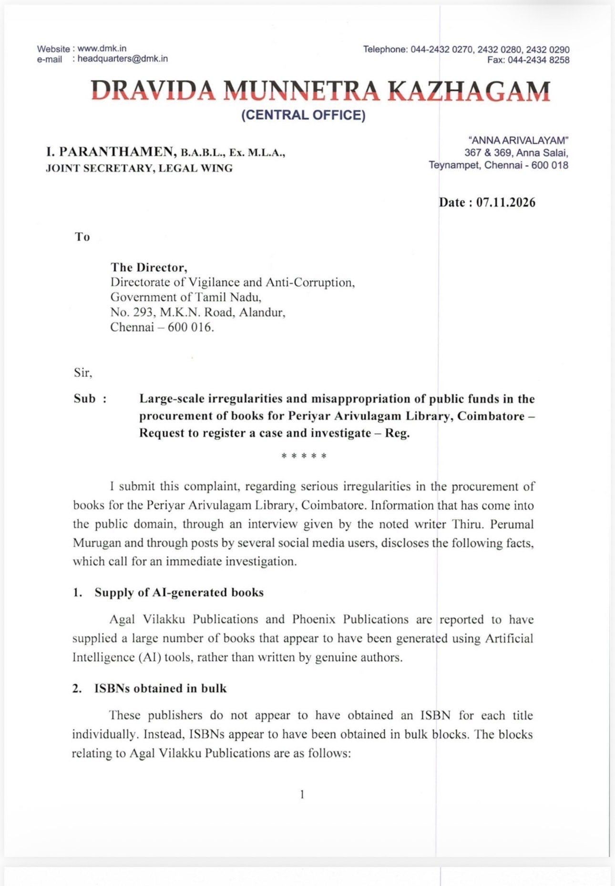
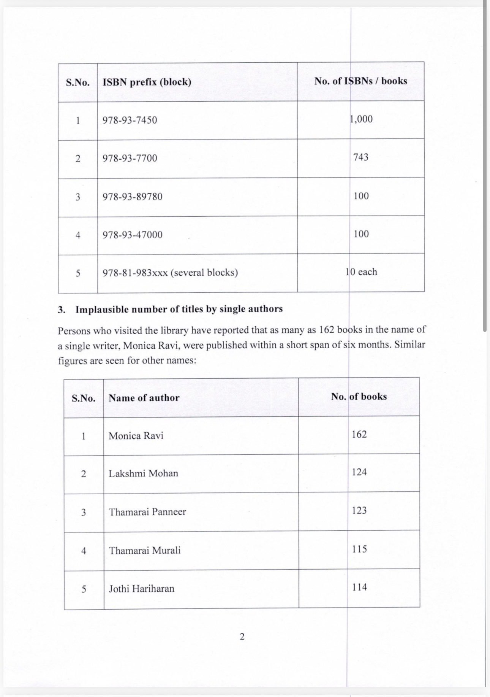
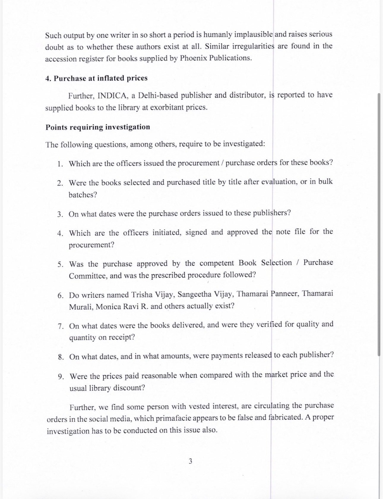
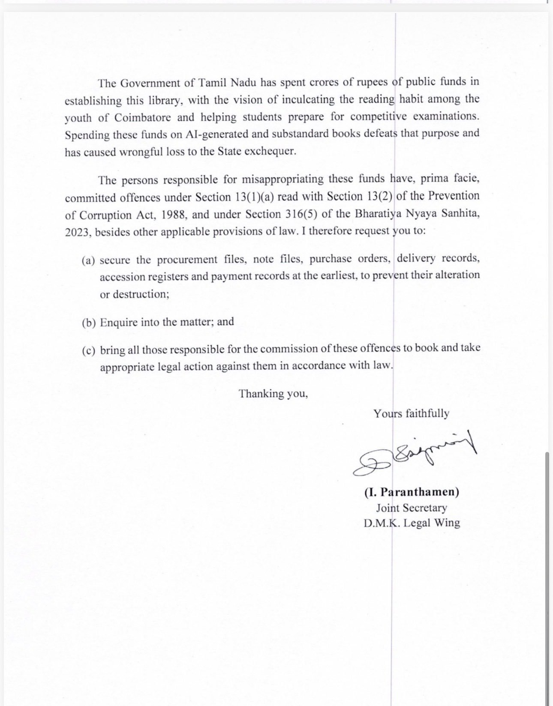

A Deepavali audit of what the state bought for its readers — and what the ISBN registry says it should have been.
Between June 2023 and April 2024 — in waves, not trickles — two government libraries in Tamil Nadu acquired books that share one quiet defect: the ISBN printed on their copyright pages does not belong to them. The International ISBN Agency's registry at isbn.gov.in, queried record by record, assigns nearly every one of these numbers to ordinary textbooks, medical handbooks, romance novels and books about Twilight — none of it the book you can borrow today from the Anna Centenary Library in Chennai or the Kalaignar Centenary Library in Madurai.
The trail surfaced during a voter-roll and procurement audit by the Aram research desk. The complaint the desk filed with Tamil Nadu's DVAC — reproduced in facsimile in this malar — flagged two imprints, Akalvilakku Pathipagam and Phoenix Publications, as suppliers of unverifiable books. A full digital audit of both libraries' public catalogs then widened it: the pattern is not two imprints, it is a distribution system. Fake-titled books sit in the catalogs under publisher names that never printed them, with acquisition dates clustered into waves and per-copy prices that repeat across two cities — ₹2,895 appears in Chennai and Madurai for different books, which points to one supplier's price list behind both bills.
Nothing here is a claim about any single book's literary merit. Every record is a claim about traceability: if a book's ISBN belongs to another book entirely, then the accession register, the bill and the shelf can never be reconciled against the national registry. That is what makes an audit trail — and procurement oversight — impossible. 382 records in two of Tamil Nadu's flagship libraries fail that test.
Perumal Murugan's essay named the imprints at Coimbatore. Our audit then found the same two names on hijacked-ISBN books in Chennai and Madurai. Three libraries, one distribution system.
| நூலகம் / Library | What was found | Imprint evidence | Wave | Status |
|---|---|---|---|---|
| பெரியார் அறிவுலகம், Coimbatore | ~1,800 Akalvilakku + ~2,000 Phoenix books alleged | Named in Perumal Murugan's essay (Sindhai, 05 Nov 2026) | — | allegation · ministerial inquiry ordered |
| Anna Centenary Library, Chennai | 164 hijacked in the full sweep — same two blocks as Madurai: 978-93-9461 (126) and 978-93-9235 (19), plus 978-93-9236 (19) | Phoenix imprint printed on all 27 legacy records — USA / UK / London, all "2023" | 13.04.2024 — 293 copies · 22.08.2024 — 250 copies · 28.06.2024 — 10 copies | confirmed · L4 |
| Kalaignar Centenary Library, Madurai | 218 hijacked records in the full sweep | Phoenix imprint on all 218 — Chennai/"first edition" styling, 2021–2023 | 12.06.2023 — 173 titles / 366 copies in one day | confirmed · L4 |
At the registry layer the same family is even larger: the registrant of record holds 3,102 Phoenix and 2,393 Akal Vilakku allocations — 5,495 ISBNs, with 1,157 declared in September 2025 alone. The Coimbatore library's catalog is not yet machine-readable online, so its counts remain the essay's allegation until its records can be audited the same way. Chennai and Madurai are no longer allegations: they are hashed artifacts you can pull yourself. Full forensics: PHOENIX-DOSSIER.md · the essay as archived: பெரியார் அறிவுலகத்தில் பெரிய ஊழல்.
The controversy in the news right now — Perumal Murugan's Sindhai essay (5 Nov 2026), the ministerial inquiry ordered on 6 Nov — concerns one library in Coimbatore. This audit asks the next question the inquiry's scope must also answer: did the same two imprints supply other state libraries? The catalogs of the two flagship libraries answer yes.
| Periyar Arivulagam, Coimbatore (allegation under inquiry) | Anna Centenary Library, Chennai (this audit) | Kalaignar Centenary Library, Madurai (this audit) | |
|---|---|---|---|
| பீனிக்ஸ் / Phoenix imprint on the books themselves | ~2,000 books alleged | 163/164 hijacked records carry an imprint; 161 say Phoenix | 218/218 hijacked records carry a Phoenix imprint |
| அகல்விளக்கு / Akal Vilakku | ~1,800 books alleged | same registrant family, ISBN-block level | same registrant family, ISBN-block level |
| Registry: who really owns the ISBNs? | — under inquiry | ordinary real books: Matrices and Algebra (Vivek Malviya), Hay House titles, school maths texts | same shape: 226 numbers registered to "Thenmozhi B", 83 to Hay House India |
| Procurement shape | ₹1,400–2,000 per book alleged | one-day wave of 293 copies (13.04.2024), ₹8,388 top price | one-day wave of 173 titles / 366 copies (12.06.2023) |
Two independent facts tie the three sites together. First, the imprint on the object: 379 of the 382 hijacked records in Chennai and Madurai are printed "Phoenix" on the copyright page — the same imprint named in the Coimbatore allegation, in impossible variants (one publisher, four countries of publication, all "2023"). Second, the registry footprint: Phoenix Publications holds 3,102 allocated ISBNs and Akal Vilakku Pathipagam 2,393 — 5,495 numbers between two applicants, with 1,157 declared "published" in September 2025 alone. Traceable: imprint counts in the ledger; block counts in the dossier.
What this page does not claim: that any named individual committed an offence, or that every Phoenix-printed book is fake. What it claims is narrower and already actionable — books whose ISBNs belong to other books sit on the public shelves of two flagship libraries under the same imprint flagged at a third. The ministerial inquiry's scope should cover all three. Dossier recommendation #3 asks exactly this.
Classification of all 569 screened records. Verdicts are defined in Verify It Yourself and reproducible from the open data.
| Library | Records | Hijacked | Never in registry | No ISBN in record | Copies | Visible cost |
|---|---|---|---|---|---|---|
| Anna Centenary Library, Chennai | 215 | 164 | 51 | 0 | 419 | ₹1,51,675.00 |
| Kalaignar Centenary Library, Madurai | 354 | 218 | 27 | 109 | 453 | ₹32,148.22 |
| Total | 569 | 382 | 78 | 109 | 872 | ₹1,83,823.22 |
"Hijacked" = the ISBN exists in the registry but belongs to a different title/publisher. "Never in registry" = the number was never allocated at all. "No ISBN" = catalog record carries no ISBN to test. Visible cost = sum of prices printed on the public OPAC — where the OPAC hides the price, the cost is unknown, not zero.
Acquisition dates cluster on single days — consistent with bulk invoice clearing, not year-round collection building.
Chennai. Largest single-day intake: 13.04.2024 — 293 copies22.08.2024 — 250 copies28.06.2024 — 10 copies Bulk price points recur: ₹2,795 on 16 records, ₹2,895 on 9, ₹2,695 on 6 — and 202 of the 208 records that list copies are exactly 2 copies, as if ticked off one catalogue list.
Madurai. The KCL intake of fake-titled books lands in a single June 2023 window: 12/06/2023 — 366 copies13/06/2023 — 42 copies14/06/2023 — 33 copies — 173 titles on 12 June alone, over half the intake in three days, on bill 19/23-24 (210 records). The price range runs ₹399 to ₹10,231, and ₹2,895 (×3) matches a Chennai price point exactly.
Where the OPAC shows no price — 344 KCL copies — the bill, not the screen, is the audit source. We have asked; the OPAC does not show it.
The registry's true owners of the hijacked numbers — across both libraries, 382 records.
| True registrant (per isbn.gov.in) | Hijacked records | Sample of the real title |
|---|---|---|
| Thenmozhi B | 226 | Differential and Integral Calculus |
| Hay House Publishers India Pvt. Ltd. | 83 | Miracles with EFT: Tap Your Way to Emotional Freedom |
| Ashok Chopra | 20 | Soul Mantra: Igniting Your Spiritual Voyage and Awakening the Self |
| Vidya Publications | 19 | Philosophical Thinkers and Traditions: MCQs for Mastery |
| + other legitimate registrants | 34 | see the full ledger |
Each of these registrants is a victim: their allocated numbers were printed on someone else's books. The DVAC complaint annexure (below) lists the block allocations that fed the Chennai intake.
Five more Tamil Nadu Koha catalogs swept on 08 November 2026 for the factory fingerprints: the Phoenix imprint, the Thenmozhi B block, and the one ISBN that sits on shelves in both flagships (9789394612709, held in Chennai as biblio 526405 and in Madurai as biblio 100032).
| Library | Koha OPAC | pb:Phoenix | pb:Thenmozhi | nb:9789394612709 (cross-library fingerprint) | Verdict |
|---|---|---|---|---|---|
| Anna Centenary Library, Chennai | 118.185.210.241:8001 | 145 hijacked rows (full-catalog screen) | — | 1 | factory present |
| Kalaignar Centenary Library, Madurai | 122.184.84.190:1011 | 352 | 0 | 1 | factory present |
| University of Madras Library, Chennai | 117.239.156.200 | 16 (sampled: real "Phoenix" books) | 0 | 0 | clean |
| Periyar University "Thiruvalluvar Library", Salem | 14.139.186.90:8081 | 5 | 16 (M.Thenmozhi 1996–2001, real Tamil publisher) | 0 | clean |
| VIT (Vellore Institute of Technology) | webopaccc.vit.ac.in | 24 (private college, different vendor era) | 0 | 0 | clean (not a procurement-scam library) |
| Tamil Nadu Agricultural University | tnau.bestbookbuddies.com | unreachable from probe vantage (sandbox + OCI Mumbai) — pending | not tested | ||
| SSN College of Engineering | opac.ssn.edu.in | Koha detected on site, no live OPAC base answered | not tested | ||
| CUTN Chozha Central Library | centrallibrary.cutn.ac.in/services/opac | OPAC page is an image-only link (opac.png); no public Koha URL published | not tested | ||
The cross-library fingerprint ISBN (9789394612709, "Data Analysis Using Python", printed Phoenix 2023) is in the registry allocated to Thenmozhi B for a different book entirely (“Introduction to Projective Geometry”). It sits on shelves at both flagship libraries. None of the five other TN Koha catalogs we could reach hold it. Raw sweep: koha-tn-sweep.csv · instances: tn-koha-instances.json.
Filed 07 November 2026 with the Directorate of Vigilance and Anti-Corruption, Tamil Nadu. Pages 1–4.

Page 1 — covering letter
Page 2 — the ISBN block table and authors
Page 3 — the investigation points requested
Page 4 — signature and enclosuresTap any page for the full-size facsimile.
Each numbered claim below carries the evidence rung and the exact link that checks it — registry query, OPAC record, or dataset row.
~1,800 Akalvilakku books on 4th-floor Tamil shelves (hardcovers)
All ISBNs in these books fake — no such numbers online
Contact = akalvilakkupathipagam@gmail.com, no phone
Publisher address '3/448 Bharath Nagar, Brahmaputra St, Madipakkam Chennai-600091' is a fake locality
300pp books priced ₹1,400–2,000, uniformly; market norm ₹300–350/300pp
Phoenix Pathippagam 100+ similar books + hundreds of unsorted boxes
Publishers created solely for this supply; pseudonymous authors; AI/low-effort generation
Books reached library June 2026; order date unknown
Minister Rajmohan: immediate inquiry, file to CM
₹50 crore book budget in ₹301.71 cr project
No book-supply tender on TN e-procurement for this library (searches: arivulagam / library books coimbatore / நூலகம் → 0 book tenders; only PWD fit-out)
No bibliographic footprint: OpenLibrary 0 hits for authors Surya Balu / Manisha Saravanan / imprint; web exact-quote 0 hits for imprint; gmail 0 footprint
Phoenix Publications (registry) pool: 3
86 author names appear in BOTH the Akal Vilakku pool (2393) and the Phoenix pool (3102) incl. top names Thamarai Murali / Thamarai Paneer Selvam / Hariharan variants
Phoenix has real pre-2022 history (2018 C++ titles
DVAC complaint (07.11.2026, I. Paranthamen, DMK Legal Wing Joint Secretary) lists Agal Vilakku ISBN blocks: 978-93-7450=1000, 978-93-7700=743, 978-93-89780=100, 978-93-47000=100, 978-81-983xxx=10 each
Registry live pull reproduces complaint block table exactly: 1000/743/100/100 + several 10-blocks, all registrant Akal Vilakku Pathipagam
Phoenix Publications holds further blocks not in complaint: 978-93-7583x=999, 978-93-7771x=423, six 100-blocks, 51/46 blocks, ~90 10-blocks; total 3102 allocations
Author clusters: Lakshmi Mohan 124 (exact match complaint vs registry); Monica Ravi 162/136; Thamarai Panneer 123/118 (spelling variants); Thamarai Murali 115/113; Jothi Hariharan 114/71
83% of Akal Vilakku's 2393 allocations carry declared publication dates Sep-2025..Feb-2026 (1983 records); Feb-2026 alone 743 = whole 978-93-7700 block
Full-catalog screen: 569 ISBN-bearing records across ACL Chennai (215) + KCL Madurai (354); 382 hijacked (allocated elsewhere), 78 never in registry, 109 carry no ISBN; 872 copies; visible OPAC spend Rs 1,83,823.22
Hijack registrants: Thenmozhi B 226
78 NOT-IN-REGISTRY records: 51 ACL + 18 KCL cluster in unallocated blocks adjacent to Phoenix's 978-93-92360-x (stems 978-93-92359/92360-3); 9 KCL records carry fabricated foreign-prefix stems (978-1-78882, 978-969-461, 978-988-159, etc.)
Same actor, two libraries: blocks 978-93-9461 and 978-93-9235 allocated to registrant Thenmozhi B supply hijacked ISBNs in both ACL Chennai and KCL Madurai (348 of 382 hijacked); Phoenix imprint printed on 237 of 382 hijacked books
2026-11-08 fleet sweep: fingerprint ISBN 9789394612709 (Data Analysis Using Python / Kristijan Malden; registry-allocated to Thenmozhi B for Introduction to Projective Geometry) is held ONLY by the two DIPR flagships (ACL biblio 526405, KCL biblio 100032); 0 hits in Periyar Univ, UNOM, VIT, TNAU Koha OPACs
Periyar Univ pb:Thenmozhi (16) are M.Thenmozhi Chennai, 1996-2001 publication dates - genuine Tamil publisher, predates fake block; not the factory
KCL biblio 100032 carries ISBN 9789394612709 while registry's Phoenix Publications allocation for the same title (Data Analysis Using Python) is 978-93-94612-77-8 - printed ISBN differs from registry allocation (corrects 2026-11-07 inventory note)
Rungs: L3 = verified from a saved evidence copy (hash-listed in the repo's evidence/SHA256SUMS); L4 = independently re-verified against the live source on a second session. Anything weaker is labelled. See Verify It Yourself for the one-line commands.
Everything on this malar is downloadable, hashed and re-derivable. No sign-up, no scraping needed.